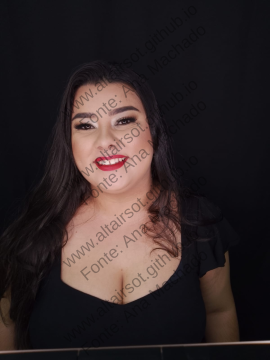
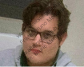
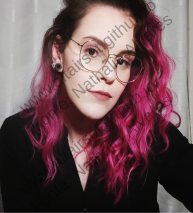
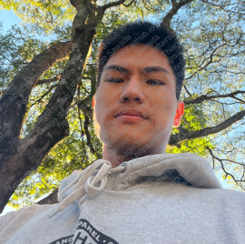

É comum que estudantes de graduação terminem o curso sem realizar atividades de pesquisa genuínas ou sem ler artigos científicos. Na área de Matemática, isso acontece porque é necessário ter uma base sólida de conhecimentos para compreender os artigos. Na Teoria de Grupos, por exemplo, é recomendado ter familiaridade com estruturas algébricas, normalmente ensinadas no segundo ou terceiro ano do curso. Além disso, as pesquisas nessa área costumam abordar conteúdos que a maioria dos estudantes não tem contato durante a formação. Essa combinação de fatores, em minha visão, torna a dificuldade inicial da pesquisa algo natural.
Nos projetos de IC que oriento, geralmente escolho um tema que não está no currículo do estudante e que ele consiga compreender facilmente durante o período de orientação. O projeto consiste basicamente em ler e entender o conteúdo. Nos encontros semanais, o estudante faz uma apresentação do que estudou. Também incentivo que ele escreva, com suas próprias palavras, sua compreensão do conteúdo. Durante a orientação, busco fazer correções e ajustes no texto.
Em geral, ao contrário de outras áreas da ciência, devido à dificuldade dos problemas de pesquisa em Matemática, um estudante de IC (ou até mesmo de mestrado) não consegue obter resultados que possam ser publicados em um artigo. Muito raramente, algumas exceções conseguem isso no mestrado, imagine então em um projeto de iniciação científica. Considero isso bastante positivo, em certa medida. Faz parte do desenvolvimento do estudante perceber que a pesquisa muitas vezes nos leva a enfrentar obstáculos e que precisamos buscar outras abordagens, explorando novas técnicas que podem mudar o rumo da pesquisa que estamos realizando. Ao contrário do que acontece nas disciplinas regulares da graduação, aqueles que se dedicam à pesquisa precisam aprender a formular perguntas, manter a curiosidade e questionar aspectos de sua pesquisa que devem convencer a comunidade científica de que suas questões são interessantes.
Costumo orientar IC e trabalho de conclusão de curso (TCC). Caso queira trocar uma ideia sobre esses tipos de orientações, "bora" bater um lero. :-)
